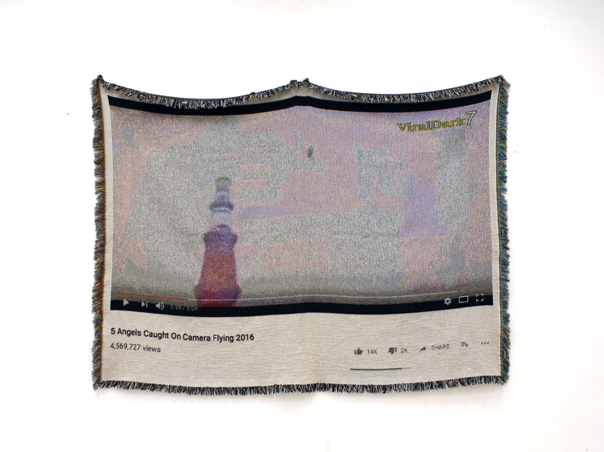

back
Tie It Off & Count Again
Hamilton Audio Visual Node, April 2 - 7, 2018
An exhibition and publication project curated by Rowan Lynch towards the completion of a BFA in Criticism and Curatorial Studies. Closing performance & publication launch in association with the HAVN sonic art series, April 7th, 7 - 11PM.
An exhibition featuring textile work by women and non-binary artists including: Vida Beyer, Cat Bluemke, Sophia Borowska, Adrienne Hall, Jiachen Liu, Maddie McNeely, Soledad Fatima Muñoz & Maria Jose Murillo
Exhibition Publication: self published, 47 pages, perfect bound. View in full here.
"Weaving is one of the oldest technologies, but this statement fails to describe the intimacy that exists between these terms. Though this connection is neglected inside of hierarchies that reject the historicization of a practice with an embedded relationship to femininity, labour, and craft, it is a link that can be glimpsed sedimented within the linguistic biography of the word technology itself. Teks, the Proto-Indo-European root of the english word technology, means to weave. In a space where they have not yet deviated, framing weaving as a technology becomes redundant. Presupposed categorical arrangements are loosened."
"The first technology was also the first technology to be taken over by machines - and the Jacquard looms role, both as the first industrialized technology of the industrial revolution & as a foundational model for the transmission of information in binary terms, affix textiles within an ever relevant timeline. This history offers textiles as a medium uniquely suited to explore assumptions about contemporary spaces of interaction. Tie It Off & Count Again presents artists who have created contemporary textile work that make tangible these immaterial, virtual, and personal realms."
CBC Coverage can be found under "ouverture de l’émission" here.

Foreground: Adrienne Hall, Net for Forgetting, untied lucky knots, wood, tangerines, 2016. Background: Jiachen Liu, Untitled, digitally drawn Jacquard weaving with wool, 2017.
Cat Bluemke, Spiritus Sancti, Jacquard weavings, 2017.

Sound performance at HAVN, exhibition closing night, April 7th 2018. Pictured: Soledad Fatima Muñoz, FUSE, copper wire and cotton weaving, 2017.

Exhibition closing night, April 7th 2018.

Exhibition Publication, work pictured: sketchbook pages by Maria Jose Murillo, 2018.